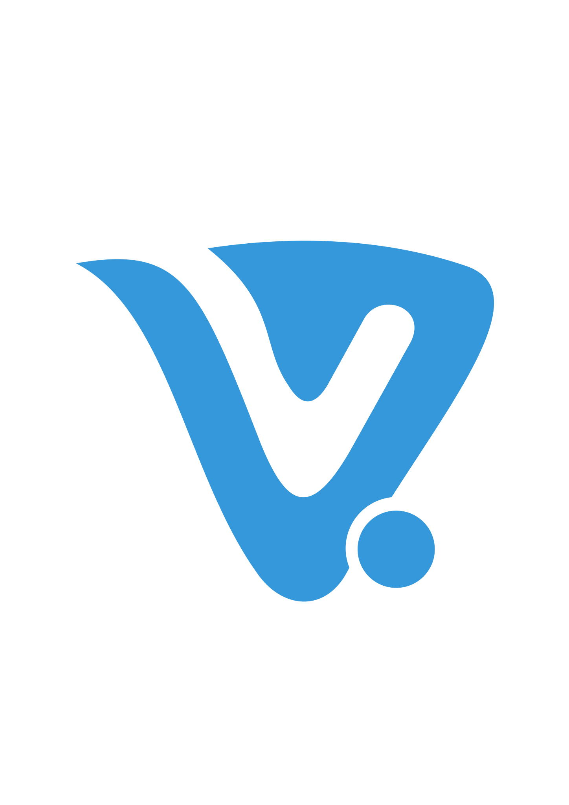

TOP
Viktor
Kynchev
Thinker // Designer // Coder
Contact MeAbout Me

Hi, I am Viktor - Freelance Front-End Developer from Velingrad, Bulgaria. I have a rich knowledge about web technologies and web development. Currently studying in Pravets, Bulgaria. I write code with love for this job. Specialising in HTML, CSS, JavaScript, WordPress, Responsive Design, Animation, and Performance...I have a wide range of skills: Front-End Development, Web Design and Back-End Development. I mainly take on Front-end Development projects now, but with experience in these three disciplines, I am able to work on a project with the full scope in mind.
Front-End Development
HTML5
CSS3
JavaScript
I create websites that allow the user to experience your website in the best and most appropriate way suited to the device they are using. By working using progressive enhancement, a website is delivered with a Responsive Layout that can best make use of the space available on the smallest to largest devices.
Cross browser compatibility is ensured by using feature detection so older browsers still in use today provide a solid experience, whilst modern browsers can go the next step and enhance the users time spent on your site.
Design
Photoshop
Illustrator
I officially call myself a Front End Developer, but have a long history of web design work too. In my experience, it is best to concentrate solely on one aspect of creating a website whilst still having applicable knowledge of other areas (such as design and back end development) to be of the most value.
Although I no longer take on projects that are solely design now, I believe I can provide valuable design experience to a project, aim to achieve the same level of vision as a designer would and am just as comfortable working with Adobe Photoshop and Illustrator as I am writing code.
You have a job, but don't have developer - Hire Me
Portfolio
Contacts
Viktor Kynchev
E-mail: v.kynchev@gmail.com
Developer Profile at GooglePlay
Facebook Profile at Facebook.Com
Twitter Profile at Facebook.Com